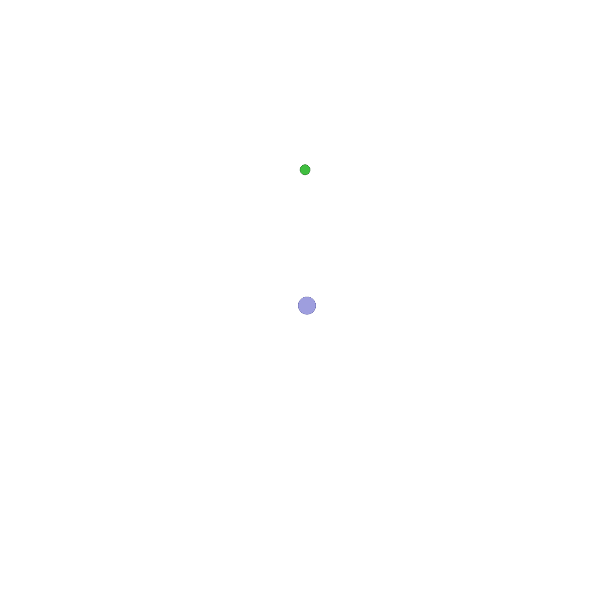
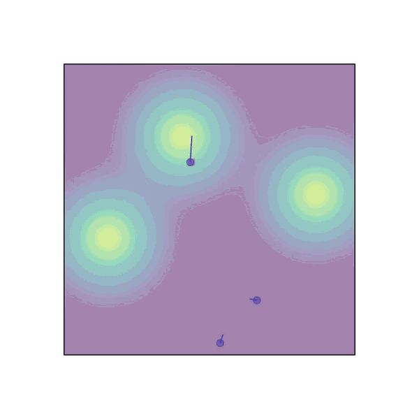

Wait, Backpropagating Through a World Model Is All You Need?
A year ago, I was dabbling in model-based reinforcement learning, testing out PPO and SHAC . While PPO struggled with almost everything we threw at it, SHAC was unexpectedly strong and remarkably stable-though it came with one big catch: it needs a fully differentiable environment, which is rarely easy to build. Me, clearly operating at the absolute peak of my deep-learning-researcher powers, naturally wondered: what if I just tossed a neural network at the problem? And, against all expectations---including mine---it sort of worked.
Origin Story of the Idea
In early Spring 2024, I was contacted---through my advisor---by a research unit in Bologna. Have recently started working with AI and LLMs, but their long-term expertise lies in field calculus and aggregate computing . Quite an interesting area, if you ask me. I’m no expert in aggregate computing---and it had been over a year since I last seriously engaged with it---so take everything I say on the topic with a hint of skepticism. Anyway, the core issue they brought up was this: aggregate computing languages are difficult for everyday developers, and ideally you’d just define a fitness function and let an automated system generate a program that maximizes it.
Our first idea? Build a differentiable programming language for aggregate computing, so we could
directly use gradients from a loss function to optimize behavior. So I started prototyping in pure
PyTorch.
The plan was simple enough: test whether the approach even worked on a tiny toy problem.
And the toy problem of choice was very straightforward---take \(n\) agents and have them position
themselves to maximize the coverage of a given area. Each agent would be controlled by a tiny
neural network, trained via backpropagation through time (BPTT).
All I had to do was simulate a few environment steps, compute a loss, and call
loss.backward(). Easy, right?
Well… not quite. I quickly hit a major roadblock: how exactly do you define a differentiable loss that encourages agents to cover as much area as possible? Computing the total covered area---accounting for overlaps---isn’t trivial, and doing it in a differentiable way is even trickier. My preferred solution would have been a Monte Carlo estimate: sample a bunch of points and check whether they fall inside any agent’s coverage zone. But Monte Carlo sampling is inherently non-differentiable. So that option was out.
At that point, I was stuck. So I pulled my final trick: replace the loss function with a neural network. Seriously. The task was simple enough, I could generate endless training data, and most importantly, neural networks are differentiable by design. So I trained a small network to predict the coverage area given the agents’ randomly initialized positions. Then I used that network’s output as the loss.
The results were surprisingly good. After just a few training steps, I had a second network that could steer the agents to cover the area efficiently, minimizing overlap. I even managed to scale up the number of agents quite a bit. Here’s an ugly little gif I made during the process---please judge kindly.
The black dots represent the agents; you can watch them gradually spread out to cover the whole region. The red dots are the sampled points used to estimate coverage. I didn’t even bother with true Monte Carlo sampling---just a simple grid. Truly the pinnacle of elegance and sophistication.
At the next meeting, I presented the results to my advisor and the Bologna team. Since everyone was intrigued by the potential, we decided to channel our efforts into developing this idea further. And so began our journey into scaling this approach to more diverse and complex scenarios.
Background
Notation
In reinforcement learning, we interact with an environment whose dynamics are governed by a true transition function \(F\). Because we rarely know \(F\) exactly---or because we prefer something differentiable---we often work with a differentiable transition model \(F_\theta\). Similarly, we distinguish between the true reward function \(R\) and its differentiable approximation \(R_\theta\). Finally, our agent acts using a policy model \(\pi_\theta\), parameterized by \(\theta\).
Backpropagation Through Time
Backpropagation Through Time (BPTT) is the most direct way to train a policy network inside a fully differentiable environment. We define our policy network as \(\pi_\theta\), and assume access to a differentiable transition model \(F_\theta\) as well as a differentiable reward model \(R_\theta\). The transition model \(F_\theta(s_t, a_t)\) produces the next state, while the reward model \(R_\theta(s_t, a_t, s_{t+1})\) outputs a scalar reward for each transition.
Starting from an initial state \(s_0\), the policy samples actions \(a_t \sim \pi_\theta(s_t)\). These actions are fed into the transition model to obtain new states: \[ s_{t+1} = F_\theta(s_t, a_t). \] At each step we compute the reward \[ r_t = R_\theta(s_t, a_t, s_{t+1}). \] After rolling out for \(T\) steps, the total return becomes \[ \mathcal{R}(s_0,\theta) = \sum_{t=0}^{T} r_t. \] Because every component---policy, transition, and reward---is differentiable, \(\mathcal{R}(s_0,\theta)\) is itself a single (very large) differentiable computation graph: \[ \begin{aligned} \mathcal{R}(s_0,\theta) =& \sum_{t=0}^{T} R_\theta(s_t, \pi_\theta(s_t), F_\theta(s_t, \pi_\theta(s_t))) \\ =& \sum_{t=0}^{T} R_\theta\!\Big(F_\theta(s_{t-1}, \pi_\theta(s_{t-1})),\, \pi_\theta(F_\theta(s_{t-1}, \pi_\theta(s_{t-1})))\Big) \\ &\vdots \end{aligned} \]
With this expression, we can compute gradients using standard automatic differentiation: \[ \nabla_\theta \mathcal{R}(s_0,\theta), \] and update the policy parameters via gradient ascent: \[ \theta \leftarrow \theta + \eta \,\nabla_\theta \mathcal{R}(s_0,\theta), \] where \(\eta\) is the learning rate.
And that's it---conceptually simple, especially in frameworks like PyTorch. But in practice? BPTT often collapses under its own weight. Long-horizon rollouts cause gradients to vanish, explode, or accumulate so much noise that training becomes unstable. In many real settings, BPTT barely trains at all. Fortunately, this is exactly where SHAC steps in.
Short-Horizon Actor-Critic
SHAC---Short-Horizon Actor-Critic---is designed to make differentiable-RL training feasible by embracing a simple idea: don’t backpropagate through a huge horizon; backpropagate through a short one. Instead of unrolling hundreds (or thousands) of steps, SHAC restricts gradient flow to a manageable \(H\) (often 32–64).
The original SHAC paper includes a value function to predict future returns beyond horizon \(H\), but in my experience, SHAC performs surprisingly well even without the value baseline. The real magic is simply shortening the gradient path.
The SHAC update is: \[ \theta \leftarrow \theta + \eta \,\nabla_\theta \mathcal{R}_H(s_0,\theta), \] where \(\mathcal{R}_H\) denotes the return computed over the truncated horizon \(H\).
If you include a value function \(V\), the update becomes: \[ \theta \leftarrow \theta + \eta \,\nabla_\theta \left( \mathcal{R}_H(s_0,\theta) + V(s_H,\theta) \right). \]
Below is a visualization of SHAC’s computation graph structure:
In the figure:
- The reward function \(R\) is shown as small purple dots.
- The transition function \(F_\theta\) as small orange dots.
- The policy network \(\pi_\theta\) as small blue dots.
- The value model \(V_\theta\) as small cyan dots.
- States \(s_0, \ldots, s_4\) are large orange nodes.
- Actions \(a_0, \ldots, a_3\) are large blue nodes.
- Rewards \(r_0, \ldots, r_3\) are large purple nodes.
- Values \(v_1, \ldots, v_4\) (from the value function \(V\)) are large cyan nodes.
Everything begins at \(s_0\). At each step, the policy samples an action \(a_t\), the transition model produces \(s_{t+1}\), and the reward model computes \(r_t\). Note that in VMAS the reward sometimes depends on the full transition \((s_t, a_t, s_{t+1})\), not just the state. If a value function is present, it evaluates each state to produce \(v_t\). All rewards and values feed into a final loss function \(L\), whose gradient flows backward through the entire short-horizon graph to update the policy parameters.
In this figure, every component is differentiable, so all connections are drawn as solid lines. Later, when we introduce SHAC++, we'll mark non-differentiable components using dashed lines to indicate where gradient flow breaks.
SHAC++
I have to admit: SHAC is genuinely impressive. It works remarkably well across a wide range of challenging tasks, in both single-agent and multi-agent settings. But the requirement of a differentiable environment is a major constraint. Building such environments is often difficult, sometimes impossible. Think back to the very first area-coverage example---how would you define a differentiable loss for the covered area? Or consider discrete environments like board games, where differentiability simply doesn’t exist.
Replacing the differentiable environment with a learned model is a natural next step. Beyond the policy model, we introduce a world model \(F_\theta\) that learns to simulate environment dynamics, and a reward model \(R_\theta\) that predicts rewards from states and actions. Both models are neural networks trained jointly with the policy.
More precisely, our world model is not a simple next-state predictor. Instead, we adopt an Action World Model : given an initial state and the full trajectory of actions, the model predicts the entire sequence of future states in one forward pass. This makes transformer-style encoder–decoder architectures a perfect fit---simple to implement, highly scalable, and free from recurrence, which helps maintain stable gradient flow. Although, I believe a next-state predictor would work well too.
This setup naturally gives rise to two notions of state. The real environment state \(s_t\) is used to collect trajectories that train the world and reward models. The simulated state \(s'_t\) is produced entirely by the world model.
Below is the high-level architecture of SHAC++.
As shown, the structure closely mirrors SHAC. The key difference is the dashed orange connections, indicating that gradient flow does not pass through the real states \(s_t\). The world model receives the initial state and the entire action sequence, producing all simulated states \(s'_t\) in one shot.
Development
To test the idea, we first needed a suite of environments. We wanted differentiable environments to separately evaluate the fidelity of the world and reward models, so VMAS was the natural choice. VMAS provides several multi-agent differentiable environments built in PyTorch. Our goal was to evaluate across four diverse scenarios. As a baseline, we chose PPO , and later aligned many of our design choices with SHAC . In fact, we aligned so closely with SHAC that we eventually named our approach SHAC++ .
We began implementing the method, but early experiments revealed two issues: poor scalability and high variance. Some runs converged to good policies; many others did not converge at all. After several rounds of iteration---initially in the dark---discovering SHAC helped immensely. We adopted several of its design principles: removing the value function, limiting the rollout horizon, and simplifying the training loop. With these adjustments, the method finally stabilized. At that stage, our algorithm was essentially SHAC with the environment and reward replaced by a World model a Reward model.
The only substantial modification we introduced was an additional loss term to keep the policy’s actions within the valid action space. To illustrate the issue: suppose the policy outputs actions in \(\mathbb{R}^2\), but the environment accepts only actions in \([-1,1]^2\). During rollout we clip the actions, but clipping provides no gradient signal. One common workaround is to place a \(\tanh\) activation at the policy output, but this causes the pre-activation values to grow uncontrollably and saturate the \(\tanh\), leading to vanishing gradients---especially problematic when the world and reward models are still inaccurate.
Here’s what happens during training: backpropagation through the reward model tells the system how observations should change to increase predicted reward. Backpropagating further through the world model tells us how actions should change to achieve those observation changes. Early in training, when both models are poorly calibrated, the easiest way for the system to increase predicted reward is simply to increase the magnitude of its inputs. The policy learns to output very large values, which then get clipped---and the clipping hides this behavior from the gradient.
The most stable solution we found was to add a penalty encouraging the policy to remain inside the valid action bounds. This stabilizes policy learning while the world and reward models adapt. Concretely, if the valid action range is \([l, r]\) and the policy outputs \(x\), we introduce the loss \[ \ell(x,l,r) = \begin{cases} (l - x)^2 & \text{if } x < l, \\ (x - r)^2 & \text{if } x > r, \\ 0 & \text{otherwise}. \end{cases} \] It may look small, but this term was absolutely essential for stabilizing training.
Experiments
We began with relatively simple experiments, since---as we will see----more complex scenarios suffer from a severe cold-start problem. The four environments we selected from VMAS are shown below. Dispersion: agents must move toward randomly sampled target points. Discovery: agents explore the environment to locate hidden targets using a sensor attached to their base body. Transport: agents must collectively push a heavy box to a goal location, requiring coordinated force. Sampling: agents collect spatially distributed reward mass scattered throughout the environment. Each scenario was tested with 1, 3, and 5 agents. A visualization of the environments is shown below.
|  |

|
|  |
For each environment, we evaluated four algorithms: PPO, our baseline; SHAC, the original differentiable short-horizon method; SHAC+, a variant of SHAC where only the reward function is replaced with a learned model; and SHAC++, our full approach in which both the transition model and reward function are learned.
SHAC requires both a differentiable transition and a differentiable reward, so some environments do not support SHAC out of the box; those entries are therefore absent. SHAC+, in contrast, requires only a differentiable transition function and thus runs on all four scenarios. SHAC++ removes both requirements entirely.
All algorithms were tested with 1, 3, and 5 agents. For multi-agent settings, we used MAPPO instead of PPO. We also experimented with two different policy architectures: a simple MLP, and a transformer that processes all agents’ observations
| Env | N | MLP | Transformer | ||||||
|---|---|---|---|---|---|---|---|---|---|
| PPO | SHAC | SHAC+ | SHAC++ | PPO | SHAC | SHAC+ | SHAC++ | ||
| Dispersion | 1 | 1.00 | – | 0.99 | 1.00 | – | – | – | – |
| 3 | 0.22 | – | 0.64 | 0.99 | 0.15 | – | 1.00 | 1.00 | |
| 5 | 0.16 | – | 0.85 | 1.00 | 0.14 | – | 0.93 | 0.93 | |
| Transport | 1 | 0.01 | 1.00 | 0.89 | 1.00 | – | – | – | – |
| 3 | 0.01 | 0.84 | 0.95 | 0.41 | 0.00 | 0.95 | 1.00 | 0.95 | |
| 5 | 0.01 | 0.14 | 0.95 | 0.45 | 0.00 | 1.00 | 0.99 | 0.99 | |
| Discovery | 1 | 0.33 | – | 1.00 | 0.35 | – | – | – | – |
| 3 | 0.03 | – | 0.08 | 0.08 | 0.15 | – | 1.00 | 0.95 | |
| 5 | 0.15 | – | 0.14 | 0.14 | 0.39 | – | 0.61 | 1.00 | |
| Sampling | 1 | 0.07 | 0.58 | 0.59 | 1.00 | – | – | – | – |
| 3 | 0.09 | 0.86 | 0.93 | 0.92 | 0.16 | 0.94 | 1.00 | 1.00 | |
| 5 | 0.12 | 0.83 | 0.92 | 0.86 | 0.43 | 1.00 | 0.89 | 0.92 | |
Below is a gif of SHAC++ solving the Transport scenario with 20 agents. Even at this scale, the algorithm successfully learns a coordinated policy that pushes the box to the goal.
The Cold Start Problem
As every RL researcher knows, the field is enormously complex, and it is often difficult to determine what works, what does not, or why. Even widely used algorithms demand extensive tuning and careful engineering. The well-known ICLR blog post The 37 Implementation Details of Proximal Policy Optimization captures this reality perfectly.
With that in mind, if you plan to experiment with SHAC++, I want to be transparent about where and why the method struggles. Recall that SHAC++ trains two additional neural networks alongside the policy: a reward model and a transition model. Until these models align reasonably well with the true environment, the policy will receive poor gradient signals---sometimes catastrophically poor.
Early in training, the policy behaves almost randomly. This is fine in environments where random actions still lead to meaningful interactions and occasional rewards. But in environments with sparse rewards---where random behavior produces no useful feedback---this becomes a major obstacle.
Consider scenarios where the agent controls a robot expected to walk forward without falling. A random policy will immediately faceplant. The resulting trajectories provide almost no informative data: both the transition model and reward model see nothing but "falling over immediately," and thus fail to learn anything useful.
I am convinced that with a good way to bootstrap the world and reward models, SHAC++ could match or surpass SHAC----while removing the need for a differentiable environment entirely.
Pretrained World Models
Over the past year, pretrained world models have gained significant attention. These are neural networks that attempt to simulate how the world evolves from sensory observations.
One of the most impressive examples is the Genie model family from Google DeepMind. Genie is an extremely capable world model, trained across an enormous range of environments and interaction patterns.
A model like Genie could, in principle, replace the differentiable environment component in SHAC. When an actual environment is available, it could be fine-tuned on that specific domain---exactly as we do in SHAC++.
The only remaining missing piece would be a reward model. However, extracting a reward estimator from the world model’s hidden states seems feasible. After all, such world models have been exposed to thousands of gameplay trajectories, many of which include score signals that change over time. It is plausible---and in my view likely---that the model already encodes a notion of "progress toward a goal" internally. A small neural network trained on top of these hidden representations might be enough to recover a reliable reward model.
Conclusion
Now that you have an overview of both SHAC and SHAC++, it should be clear that the core innovation in SHAC++ lies in replacing differentiable environment components with a learned world model and reward model. This substitution may seem simple, but it offers a path toward applying SHAC-style training in domains where differentiable simulators are unavailable.
If we can scale the development of high-quality world models, approaches like SHAC could become remarkably powerful---providing agents with strong generalization abilities from relatively little real-environment interaction. In my view, this is a promising direction for the future of reinforcement learning.